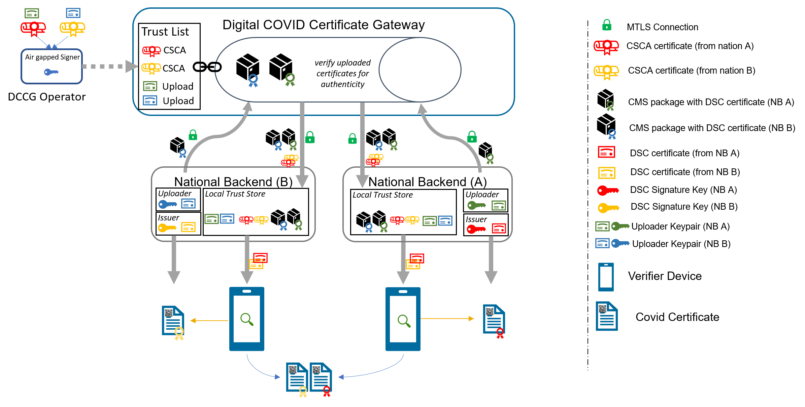

Certificate Governance
This document describes the Public Key Certificate Governance utilized by the WHO GDHCN. See the concepts document for further information.
Note: In the embedded image the following relabels apply:
- DCCG -> TNG
- CSCA -> SCA
- DCC -> GDHCN
- NB -> TNP
Context
The core functionality is the secure and trusted exchange of signature keys for GDHCN Trust Network Gateway (TNG) which acts as a central repository for the public keys. GDHCN Participants are empowered to publish the public keys that they use to sign Verifiable Digital Health Certificate. Relying GDHCN Participants can use the TNG to fetch up-to-date public key material on a timely basis.
The trust model of the GDHCN framework is a Public Key Infrastructures (PKI). Each GDHCN Participant maintains one or more Signing Certificate Authority (SCA), certificates of which are relatively long lived. The SCA issues public key certificates for the short lived, Document Signers (i.e. signers for digital health certificates), which are called Document Signer Certificates (DSCs). The SCA acts as a trust anchor such that relying GDHCN Participants can use the SCA certificate to validate the authenticity and integrity of the regularly changing DSC certificates. Once validated, the GDHCN Participant can provide these certificates (or just the public keys contained therein) to their validation applications.
Besides SCAs and DSCs, the TNG also relies on PKI to authenticate transactions, sign data, as the basis for authentication and as a means to ensure integrity of the communication channels between the GDHCN Participant and the TNG.<
The following picture presents a high-level overview of the system.
Overview

Scope of Document
Digital signatures can be used to achieve data integrity and authenticity. Public Key Infrastructures establish trust by binding public keys to verified identities (or issuers). This is necessary to allow other participants to verify the data origin and the identity of the communication partner and decide about trust. In the TNG, multiple public key certificates are used for authenticity. This document defines which public key certificates are used and how they should be designed in order to allow broad interoperability between the different GDHCN Participants. This document is based on [1] and [2]. It provides more details on the necessary public key certificates and it gives guidance on certificate templates and validity periods for countries that want to operate their own SCA. Since DSCs shall be verifiable for a defined time-frame (starting from the issuing, expire after a given time), it is necessary to define a verification model for all signatures applied on the public key certificates and the digital health certificate. Legal and administrative procedures are not in the scope of this document, they must be defined separately.
Terminology
The key words “MUST”, “MUST NOT”, “REQUIRED”, “SHALL”, “SHALL NOT”, “SHOULD”, “SHOULD NOT”, “RECOMMENDED”, “NOT RECOMMENDED”, “MAY”, and “OPTIONAL” in this document are to be interpreted as described in BCP 14 (RFC2119, RFC8174) when, and only when, they appear in all capitals, as shown here.
These concepts and the following table contains abbreviations and terminology used throughout this document.
| Term | Definition |
|---|---|
| Certificate | Or public key certificate. An X.509 v3 certificate that contains the public key of an entity |
| EC-DSA | Elliptic Curve Digital Signature Algorithm. A cryptographic signature algorithm based on elliptic curves |
| mTLS | Mutual TLS. The Transport Layer Security Protocol with mutual authentication |
| RSA | Asymmetric cryptographic algorithm based on integer factorization used for digital signatures or asymmetric encryption |
TNG communication flows and security services
This section gives an overview of the communication flows and security services in the TNG system. It also defines which keys and certificates are used to protect the communication, the uploaded information, the digital health certificates, and a signed trust list that contains all on-boarded SCA certificates. The following figure gives a high-level overview of the TNG communication flow and security services. The following sub-sections will explain the design in more detail.
Trust Model

General
The TNG works as a data hub that allows the exchange of signed data packages for GDHCN Participants. In the current phase, the signed data packages contain the DSC that are used by the GDHCN Participants. This allows other GDHCN Participant Backends to fetch them and distribute the information to their validation apps. Even if the DSCs are already signed by the SCA, this approach allows to extend the system later to allow Backends the upload of different, potentially unsigned, content (like validation rules).
Uploaded data packages are provided by the TNG “as is”, meaning that the TNG does not add or delete DSCs from the packages it receives. The Backend systems of the GDHCN Participants shall be enabled to verify the end-to-end integrity and authenticity of the uploaded data (see Section “Integrity and authenticity of uploaded data”).
In addition to this - GDHCN Participant Backend systems and the TNG will use mutual TLS authentication to establish a secure connection (see Section “Authentication and connection establishment”). So this is in addition to the signatures in the data exchanged.
Authentication and connection establishment
The TNG uses Transport Layer Security (TLS) with mutual authentication to establish an authenticated encrypted channel between the GDHCN Participant’s Backend and the Trust Network Gateway environment and utitlize its API. Therefore, the TNG holds a TLS server certificate, abbreviated TNGTLS - and the GDHCN Participant’s Backends hold a TLS client certificate – abbreviated TNPTLS. Certificate templates are provided in Section “Certificate Templates”.
Every GDHCN Participant’s Backend can provide their own TLS certificate. This certificate will be whitelisted explicitly and thus may be issued by a publicly trusted certificate authority (e.g. a certificate authority that follows the baseline requirements of the CA Browser forum), by a jurisdictional certificate authority or it can be self-signed. Every GDHCN Participant is responsible for their jurisdictional data and the protection of the private key used to establish the connection to the TNG. Clearly, the “bring your own certificate” approach requires a well-defined registration and identification process as well as revocation and renewal procedures that are described in Section “Registration of GDHCN Participant Backends”.
The TNG uses a whitelist where the TLS certificates of GDHCN Participant Backends are added after their successful registration. Only GDHCN Participant Backends that authenticate themselves with a private key that corresponds to a certificate from the whitelist can establish a secure connection to the TNG.
The TNG will also use a TLS certificate that allows the GDHCN Participant Backends to verify that they are indeed establishing a connection to the “real” TNG and not some malevolent entity posing as TNG. The TNGTLS certificate will be issued from a publicly trusted CA (included in all major browsers). It is the responsibility of the GDHCN Participants to verify that their connection to the TNG is secure (for example by checking the fingerprint of the TNGTLS certificate of the server connected to against the one provided post registration).
Signing Certificate Authorities and Validation Model
All GDHCN Participants that take part in the GDHCN framework MUST use an SCA to issue the DSCs. GDHCN Participants MAY have more than one SCA, e.g. in case of delegation authorities. Each GDHCN Participant can either use existing certificate authorities or they can set up a dedicated (possibly self-signed) certificate authority for the SCA system. The GDHCN Participants MUST present their SCA certificate(s) to the GDHCN Secretariat during the official on-boarding procedure. After successful registration of the GDHCN Participant (see section “Registration of GDHCN Participant Backends” for more details), the GDHCN Secretariat will update a signed trust list that contains all SCA certificates that are active. The GDHCN Secretariat will use a dedicated asymmetric key pair to sign the trust list and the certificates in an offline environment. The private key will not be stored on the online TNG system, such that a compromise of the online system does not enable an attacker to compromise the trust list. The corresponding trust anchor certificate TNGTA will be provided to the GDHCN Participants during the onboarding process. GDHCN Participants can retrieve the trust list from the TNG for their verification procedures.
The SCA is defined as the certificate authority that issues DSCs, hence GDHCN Participants that use a multi-tier CA hierarchy (e.g. Root CA -> SCA -> DSCs) MUST provide the subordinate certificate authority that issues the DSCs. So in that case - if a GDHCN Participant uses an existing certificate authority - the GDHCN system will ignore anything above the SCA – and whitelist only the SCA as the trust anchor (even though it is a sub-ordinate CA). This is as the ICAO model [2] only allows for exactly two levels - a ‘root’ SCA and a single ‘leaf’ DSC signed by just that SCA. In case a GDHCN Participant operates its own SCA, the GDHCN Participant is responsible for the secure operation and key management of that CA. It must be noted that the SCA acts as the trust anchor for DSCs and therefore, protecting the private key of the SCA is essential for the integrity of the Trust Network environment.
The verification model in the Trust Network PKI is the shell model (for example, defined in [3]), which states that all certificates in the certificate path validation must be valid at a given time (i.e. the time of signature validation). Therefore, the following restrictions apply:
- The SCA SHALL NOT issue certificates that are valid longer than the CA certificate itself (see [2, Section 5]).
- The document signer SHALL NOT sign documents that are valid longer than the DSC itself. GDHCN Participants that operate their own SCA MUST define validity periods for their SCA and all issued certificates, and they MUST take care of certificate renewal. Section “Certificate authorities, validity periods and renewal” contains recommendations for validity periods.
Integrity and authenticity of uploaded data
GDHCN Participants can use the TNG to upload and download digitally signed data packages after successful mutual authentication. In the beginning, these data packages contain the DSCs of the GDHCN Participants.
The key pair that is used by the GDHCN Participant’s Backend for the digital signature of uploaded data packages in the TNG system is called Trust Network Participant upload signature key pair and the corresponding public key certificate is abbreviated by TNPUP certificate. Each Trust Network Certificate brings its own TNPUP certificate, which can be self-signed, or issued by an existing certificate authority, such as a public certificate authority (i.e. a certificate authority that issues certificate in accordance with the CAB-Forum baseline requirements). The TNPUP certificate shall be different from any other certificates used by the GDHCN Participant (i.e. SCA, TLS client or DSCs).
The GDHCN Participants MUST provide the upload certificate to the GDHCN Secretariat during the initial registration procedure (see Section “Registration of GDHCN Participant Backends” for more details). Every GDHCN Participant is responsible for their jurisdiction’s data and it must protect the private key that is used for signing the uploads. Other GDHCN Participants can verify the signed data packages using the upload certificates that are provided by the TNG.
The TNG verifies the authenticity and integrity of the uploaded data with the TNPUP certificate before it is provided to other GDHCN Participants.
Requirements on the technical TNG architecture
The requirements on the technical TNG architecture can be summarized as follows:
- The TNG uses mutual TLS authentication to establish an authenticated encrypted connection with the GDHCN Participant Backends. Therefore, the TNG maintains a whitelist of registered TNPTLS client certificates.
- The TNG uses two digital certificates (TNGTLS and TNGTA) with two distinct key pairs. The private key of the TNGTA key pair is maintained offline (not on the online components of the TNG).
- The TNG maintains a trust list of the TNPSCA certificates that is signed with the TNGTA private key.
- The ciphers used MUST meet the requirements from Section “Cryptographic requirements”.
Certificate Life-cycle Management
Registration of GDHCN Participant Backends
GDHCN Participants MUST register with the GDHCN Secretariat to take part in the TNG system. This section describes the technical and operational procedure that MUST be followed to register a GDHCN Participant Backend. Legal and administrative procedures are not in the scope of this document, they must be defined separately.
The GDHCN Secretariat and the GDHCN Participant MUST exchange information on technical contact persons for the on-boarding process. It is assumed that the technical contact persons are legitimated by their GDHCN Participants and identification/authentication is performed through other channels.
The GDHCN Participant MUST provide three digital certificates during the registration and identification process:
- The Trust Network Participant’s TLS certificate TNPTLS
- The Trust Network Participant’s upload certificate TNPUP
- The Trust Network Participant’s SCA certificate(s) TNPSCA
All provided certificate MUST adhere to the requirements defined in Section “Certificate templates”. The GDHCN Secretariat will verify that the provided certificate adheres to the requirements of Section “Certificate templates”.
After the identification and registration, the GDHCN Secretariat
- adds the TNPSCA certificate(s) to the trust list signed with the private key that corresponds to the TNGTA public key
- adds the TNPTLS certificate to the whitelist of the TNG TLS endpoint
- adds the TNPUP certificate to the TNG system
- provides the TNGTA and TNGTLS public key certificate to the GDHCN Participant
Certificate authorities, validity periods and renewal
In case a GDHCN Participant wants to operate its own SCA, the SCA certificates will most probably be self-signed certificates. They act as the trust anchor of the Network Participant state and therefore the GDHCN Participant must strongly protect the private key corresponding to the SCA certificate’s public key. It is recommended that the GDHCN Participants use an offline system for their SCAs, i.e. a computer system that is not connected to any network. Multi-person control should be used to access the system (e.g. following the four eyes principle). After signing DSCs, operational controls should be applied and the system that holds the private SCA key should be stored safely with strong access controls. Hardware Security Modules or Smart Cards can be used to further protect the SCA private key.
Validity periods
Digital certificates contain a validity period that enforces certificate renewal. Renewal is necessary to use fresh cryptographic keys and to adapt the key sizes when improvements in computation or new attacks threaten the security of the cryptographic algorithm that is used. The shell model applies (see Section “Signing Certificate Authorities and Validation Model”). The following validity periods are recommended based on the assumption of the one-year maximum validity for Verifiable Digital Health Certificates :
- SCA: 4 years
- DSC: 2 years
- Upload: 1-2 years
- TLS Client authentication: 1-2 years
For a timely renewal, the following usage period for the private keys are recommended:
- SCA: 1 year
- DSC: 6 months
GDHCN Participants MUST create new upload certificates and TLS certificates timely, e.g. one month, before expiration in order to allow smooth operation. SCA and DSC SHOULD be renewed at least one month before the private key usage ends (considering the necessary operational procedures). GDHCN Participants MUST provide updated SCA, upload and TLS certificates to the GDHCN Secretariat.
Expired certificates SHALL be removed from the whitelist and trust list.
GDHCN Participants and the GDHCN Secretariat MUST keep track of the validity of their own certificates. There is no central entity that keeps record of the certificate validity and informs the participants.
The following picture shows the private key usage periods and certificate lifetimes for the recommended times in case that GDHCN Participants want to operate their own SCA (assuming one-year maximum lifetime of signed documents).
Validity Times

GDHCN Participants might define different validity periods for their public key certificates.
Revocation of certificates
In general, public key certificates can be revoked by their issuing CA using certificate revocation lists or Online Certificate Status Responder. SCAs for the Trust Network system SHOULD provide certificate revocation lists (CRLs). Even if these CRLs are currently not used by other GDHCN Participants (see [2, Section 5.1]), they SHOULD be integrated for future applications. In case an SCA decides not to provide CRLs, the DSC certificates of this SCA must be renewed when CRLs become mandatory.
A SCA SHOULD NOT use the Online Certificate Status Protocol (OCSP) for their DSCs, due to privacy concerns. GDHCN Participant Verifiers SHOULD NOT use OCSP for verification of the DSCs and SHOULD use CRLs. It is RECOMMENDED that the GDHCN Participants’ Backend performs necessary validation of DSC certificates downloaded from the Trust Network Gateway and only forward a set of trusted and validated DSC to GDHCN Participant Verifiers. GDHCN Participant Verifiers SHOULD NOT perform any revocation checking on DSC in their verification process. One reason for this is to protect the privacy of the holders of Verifiable Digital Health Certificates by avoiding any chance that the use of any particular DSC can be monitored by its associated OCSP responder.
GDHCN Participants can remove their DSCs from the TNG on their own using valid upload and TLS certificates. It must be noted that removing a DSC certificate will mean that all health certificates issued with this DSC will become invalid when GDHCN Participants fetch the updated DSC lists. Clearly, the protection of private key material corresponding to DSCs is crucial.
GDHCN Participants MUST inform the GDHCN Secretariat when they must revoke upload or TLS certificates, for example due to compromise of the GDHCN Participant Backend. The GDHCN Secretariat can then remove the trust for the affected certificate, e.g. by removing it from the TLS whitelist. The GDHCN Secretariat can remove the upload certificates from the TNG database. Packages signed with the private key corresponding to this upload certificate will become invalid when GDHCN Participants remove the trust of the revoked upload certificate.
In case that an SCA must be revoked, GDHCN Participants SHALL inform the GDHCN Secretariat as well as other GDHCN Participants that they have trust relationships with. The GDHCN Secretariat will issue a new trust list where the affected certificate is no longer contained. All DSCs issued by this SCA will become invalid when GDHCN Participants update their GDHCN Participant Backend trust store.
In case the TNGTLS certificate or the TNGTA certificate must be revoked, the GDHCN Secretariat and the GDHCN Participants must work together to establish a new trusted TLS connection and trust list.
Certificates for Staging Environments
The GDHCN Participants and the GDHCN Secretariat will use non-production environments (development, acceptance, testing, etc.) to test the system before they move to production or when new features are released. It is mandatory that public key certificates and the related key material are not reused between the production and the non-production environments. Hence, GDHCN Participants MUST use different public key certificates and private keys for the production and all the non-production environments. This applies to the TNPTLS, TNPUP certificates of the GDHCN Participants and all DSCs. The TNGTA certificates will be different for production and non-production environments.
There are multiple reasons why certificates should not be reused across different environments. One reason is that the corresponding private keys must be copied from one system to the other and typically non-production environments do not enjoy the same level of protection as production environments. This puts the security of the private keys at risk. In the scope of the Trust Network system there is an additional risk that DSCs issued for testing purpose are published on the production TNG and these DSCs could be used to issue valid health certificates.
Certificate Templates
The following sections contain cryptographic requirements and guidance as well as requirements on certificate templates. For the TNG certificates, this section defines the certificate templates. Please also refer to the certificate generation examples in the certificate preparation guide.
Cryptographic requirements
Cryptographic algorithms and TLS cipher suites shall be chosen based on the current recommendation from the German Federal Office for Information Security (BSI) or SOG-IS. These recommendations and the recommendations of other institutions and standardization organization are quite similar. The recommendations can be found in the technical guidelines TR 02102-1 and TR 02102-2 (source) or SOG-IS Agreed Cryptographic Mechanisms (source).
Requirements on the DSC
The requirements from [2, Section 3.3.2] apply. Hence, it is strongly RECOMMENDED that Document Signers use the Elliptic Curve Digital Signature Algorithm (ECDSA) with NIST-p-256 (as defined in appendix D of FIPS PUB 186-4). Other elliptic curves are not supported. Due to the space restrictions of the digital health certificate, GDHCN Participants SHOULD NOT use RSA-PSS, even if it is allowed as a fallback algorithm. In case GDHCN Participants use RSA-PSS, they SHOULD use a modulus size of 2048 or max. 3072 bit. SHA-256 SHALL be used as cryptographic hash function (see ISO/IEC 10118-3:2004).
Requirements on TLS, Upload and SCA
For digital certificates and cryptographic signatures in the TNG context, the major requirements on cryptographic algorithms and key length are summarized in the following table (as of 2021):
| Signature Algorithm | Key size | Hash function |
|---|---|---|
| EC-DSA | Min. 250 Bit | SHA-2 with an output length ≥ 256 Bit |
| RSA-PSS (recommended padding) RSA-PKCS#1 v1.5 (legacy padding) | Min. 3000 Bit RSA Modulus (N) with a public exponent e > 2^16 | SHA-2 with an output length ≥ 256 Bit |
| DSA | Min. 3000 Bit prime p, 250 Bit key q | SHA-2 with an output length ≥ 256 Bit |
The recommended elliptic curve for EC-DSA is again NIST-p-256 due to its widespread implementation.
SCA certificate (TNPSCA)
The following table gives guidance on the TNPSCA certificate template in case that a GDHCN Participant decides to operate its own SCA for the DCC system. Bold entries are required (MUST be included in the certificate), italic entries are recommended (SHOULD be included). For absent fields, no recommendations are defined.
| Field | Value |
|---|---|
| Subject | cn= <non-empty and unique common name>, o=<Provider> ,c=<GDHCN Participant> |
| Key Usage | certificate signing, CRL signing (at minimum) |
| Basic Constraints | CA = true, path length constraints = 0 |
In accordance to [2, Section 5], the subject name MUST be non-empty and unique within the GDHCN Participant’s jurisdiction. The country code (c) MUST match the jurisdiction that will use this SCA. The certificate MUST contain a unique subject key identifier (SKI) according to RFC 5280.
Document Signer (DSC)
The following table provides guidance on the DSC certificate template in accordance to [2, Section 5]. Bold entries are required (MUST be included in the certificate), italic entries are recommended (SHOULD be included). For absent fields, no recommendations are defined.
| Field | Value |
|---|---|
| Serial Number | unique serial number |
| Subject | cn=<non-empty and unique common name> , o=<Provider> ,c=<GDHCN Participant that uses this DCS> |
| Key Usage | digital signature (at minimum) |
The DSC MUST be signed with the private key corresponding to an SCA certificate that is used by the GDHCN Participant.
The following extension are to be used in accordance to [2, Section 5]:
- The certificate MUST contain a Authority Key Identifier (AKI) matching the Subject Key Identifier (SKI) of the issuing SCA certificate
- The certificate SHOULD contain a unique Subject Key Identifier (in accordance to RFC 5280)
In addition, the certificate SHOULD contain the CRL distribution point extension pointing to the certificate revocation list (CRL) that is provided by the SCA that issued the DSC.
The following extensions are to be used as defined in [2, Appendix A4]. Countries MAY also include an extendedKeyUsage entry with zero or more (i.e. up to 3) entries from:
| Field | Value |
|---|---|
| extendedKeyUsage | 1.3.6.1.4.1.1847.2021.1.1 for Test Issuers |
| extendedKeyUsage | 1.3.6.1.4.1.1847.2021.1.2 for Vaccination Issuers |
| extendedKeyUsage | 1.3.6.1.4.1.1847.2021.1.3 for Recovery Issuers |
These values are defined as non-critical, therefore all applications should handle new and/or unknown OIDs gracefully.
Upload Certificates (TNPUP)
The following table provides guidance for the GDHCN Participant Backend upload certificate. Bold entries are required (MUST be included in the certificate), italic entries are recommended (SHOULD be included). For absent fields, no recommendations are defined.
| Field | Value |
|---|---|
| Subject | cn= <non-empty and unique common name>, o=<Provider> ,c=<GDHCN Participant that uses this upload certificate> |
| Key Usage | digital signature (at minimum) |
GDHCN Participant TLS Client Authentication (TNPTLS)
The following table provides guidance for the GDHCN Participant Backend TLS client authentication certificate. Bold entries are required (MUST be included in the certificate), italic entries are recommended (SHOULD be included). For absent fields, no recommendations are defined.
| Field | Value |
|---|---|
| Subject | cn=<non-empty and unique common name>, o=<Provider>, c= <GDHCN Participant that uses this TLS> |
| Key Usage | digital signature (at minimum) |
| Extended Key Usage | client authentication (1.3.6.1.5.5.7.3.2) |
- The certificate MAY also contain the extended key usage server authentication (1.3.6.1.5.5.7.3.1) but is not required.
Beware that self-signed certificates should also contain the key usage Certificate signing (keyCertSign), so that OpenSSL can verify the (self) signature of the certificate.
Trust list signature certificate (TNGTA)
The following table defines the TNG Trust Anchor certificate.
| Field | Value |
|---|---|
| Subject | cn= Digital COVID Certificate Gateway, o=<Provider> , c=<GDHCN Participant> |
| Key Usage | digital signature (at minimum) |
TNG TLS Server certificates (TNGTLS)
The following table defines the TNG TLS certificate.
| Field | Value |
|---|---|
| Subject | cn=<FQDN or IP address of the TNG>, o=<Provider> ,c= <GDHCN Participant> |
| SubjectAltName | dnsName: <TNG DNS name> or iPAddress: <TNG IP address> |
| Key Usage | digital signature (at minimum) |
| Extended Key Usage | server authentication (1.3.6.1.5.5.7.3.1) |
- The certificate MAY also contain the extended key usage client authentication (1.3.6.1.5.5.7.3.2) but is not required.
The TLS certificate of the TNG will be issued by a publicly trusted certificate authority (included in all major browsers and operating systems, following the CAB Forum baseline requirements).
REFERENCES
[1] Interoperability of health certificates – Trust Framework – v. 1.0 – 12.03.2021 – eHealth Network – available at https://ec.europa.eu/health/sites/health/files/ehealth/docs/trust-framework_interoperability_certificates_en.pdf - last accessed 27.04.2021
[2] Technical Specifications for Digital COVID Certificates Volume 1 V1.0.5 - eHealth Network – available at https://ec.europa.eu/health/sites/health/files/ehealth/docs/digital-green-certificates_v1_en.pdf - last accessed 27.04.2021
[3] ETSI EN 319 102-1: Electronic Signatures and Infrastructures (ESI); Procedures for Creation and Validation of AdES Digital Signatures; Part 1: Creation and Validation – version 1.1.1, 2016 – available at https://www.etsi.org/deliver/etsi_en/319100_319199/31910201/01.01.01_60/en_31910201v010101p.pdf – last accessed 23.04.2021